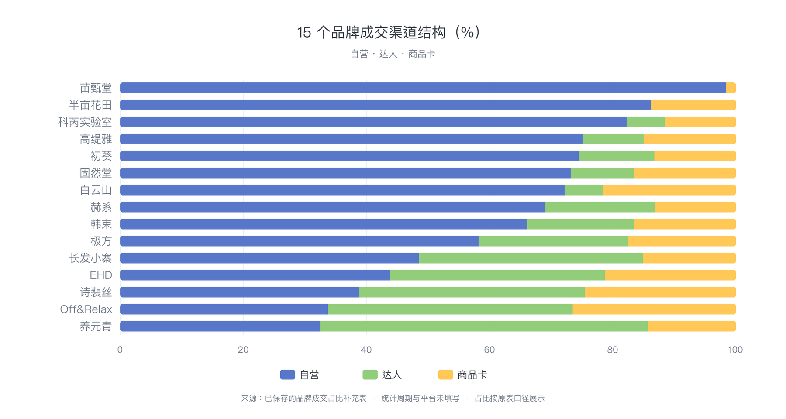

市场与竞品 · 分类观察
洗护市场&竞品看板
历史趋势、年度生态、罗盘市场榜单与小红书评论洞察可切换细分类目；商品评价分析呈现抖音竞品阶段观察和小红书话题。不同来源的指数、销量区间与金额分开展示。
最长观察窗口370 天2025.10.01 — 2026.10.05
01 / 历史趋势
公开报告 · 2025—2026市场规模与品牌历史参考
细分类目 · 公开资料
选择类目查看 · 金额为人民币2025 历史与 2026 进展
下列两项是洗护发大盘背景，并非洗发水单类规模。
公开市场规模参考 · 2025
2025 年抖音洗发水全年公开销售额；与下方同一报告的品牌格局配套阅读
| 时间与范围 | 公开规模 | 同比 / 环比 | 市场份额 | 口径与来源 |
|---|---|---|---|---|
| 2025 全年 · 抖音洗发水 | 108.99 亿元 | 同比未披露 | 见下方品牌 TOP 20 | 观研天下网页公开表；销售额口径，未说明儿童和退款处理。来源 |
不同范围和销售口径不相加；上述数据均未单独排除儿童。查看口径说明（本地底稿）
2025 抖音洗发水品牌格局
观研天下网页公开销售额 TOP 20，属于全年“洗发水”口径，非成人专项
| 排名 | 品牌 | 销售额 | 报告市占率 | 份额示意 |
|---|
报告网页注明图表仅供参考，具体数据以完整报告为准；此处展示网页披露数值。品牌销售额与份额均有四舍五入误差。
公开市场规模参考 · 2026
2026 年不同范围的公开数值，只用于背景参考
| 时间与范围 | 公开规模 | 同比 / 环比 | 市场份额 | 口径与来源 |
|---|---|---|---|---|
| 2026 上半年 · 抖音洗发护发美发 | 172.6 亿元 | 同比 +31.4% | 未披露洗发水占比 | 青眼情报报告摘要；含洗发水、护发、美发，不能当成洗发水 GMV。来源 |
| 2026 年 7 月 · 抖音洗发护发 | 29.39 亿元 | 环比 +18.9% | 未披露洗发水占比 | 青眼情报按 GMV 统计的初步数据，未审计。来源 |
| 2026 年 8 月 · 抖音洗发护发 | 28.62 亿元 | 较 7 月约 −2.6%按两篇青眼公开数计算 | 未披露洗发水占比 | 青眼情报 8 月数据；与 7 月公开值相除为推算环比。来源 |
| 2026 年 1—8 月 · 淘天＋京东＋抖音洗发水 | 173.14 亿元 | 同比未披露 | 抖音单平台份额未披露 | 青眼情报三平台合计，淘天为退后销售额，京东与抖音为 GMV。来源 |
不同范围和销售口径不相加；上述数据均未单独排除儿童。查看口径说明（本地底稿）
02 / 年度生态
蝉妈妈热度分析 · 近一年规模结构与经营方式
成交渠道构成
年度样本 GMV 占比，三个渠道合计 100%
动销商品价格带
商品数，不是 GMV 或成交价分布
03 / 近一年走势
2025.10—2026.10 · 不同口径分开展示跨年连续观察
近一年新增每日带货活动趋势；GMV 仍不能逐月精确计算
新导出的“洗发”热度趋势覆盖 2025.10.01—2026.10.05 共 370 天，其中 367 天销售额仅显示“1000万+”。因此下方用每日带货商品、视频、直播和品牌数量绘制趋势；这些是活动数量，不是成交额。罗盘 4—9 月仍为另一口径的榜单指数。
查看精确月度成交额模板（公开版不提供下载）近一年“洗发”成交趋势 · 区间
2025 年 10 月—2026 年 9 月，12 个完整自然月
每月销售额下限 · “1000万+”按至少 1000 万计
每月销量区间 · 累加每日展示区间
销售额柱子只表示最低可能值，实际值可能高得多；不能称为月 GMV 或据此算增速。销量上下限为展示区间相加，也非精确销量。2026 年 10 月仅 5 天，未绘入月度图；不能用 2025 全年公开市场规模反推这份不同时间与关键词样本的逐月实付金额。
直播与视频带货活动量 · 逐月
12 个完整自然月；数值为每日导出活动数的月度合计，并非去重视频/直播
2026 年 10 月仅有前 5 天，未绘入月度图。活动数量变化不代表销售额或渠道份额变化。
月度成交额
只对相邻自然月计算环比；同比需要上一年同月。客单价 = 成交额 ÷ 订单数。
04 / 罗盘月度分析
罗盘·策略 · 品牌榜与商品榜洗发水榜单 · 4—9 月
罗盘洗发水导出榜 · 4—9 月
品牌、商品与对应指数集中展示；各月榜单条数以原文件为准
品牌金额指数走势
选择品牌查看金额指数；可按当月名次或相邻一、两个月的指数变动排序
8→9 月金额指数变动 · 9 月前 15 名中的可比较品牌 · 最多显示 10 个
9 月名次 · 前 10 品牌
销售额估算 = 品牌金额指数 × 93.47 元／点，仅为统一试算；此系数未经品牌榜和其他类目验证。指数变动不是实际 GMV 增速。品牌未进某月前 30 名时不计算该月相关变动。
产品金额指数走势
按月份查看商品金额指数变动与对应榜单数据
—跨月按商品 ID 匹配；展示价不是实付均价
8→9 月代表商品金额指数变动 · 点击条形打开商品链接
| 名次 | 商品标题 | 品牌 | 店铺 | 展示价 | 销售额估算 | 金额指数 | 件数指数 | 上月指数变动 |
|---|
销售额估算 = 商品金额指数 × 93.47 元／点，适用于本页全部类目的试算显示，并非实际 GMV。按原 Excel 标题超链接中的商品 ID 匹配相邻月份，且两月各出现一次时计算指数变化；点击上方条形可打开商品链接。
05 / 营销渠道分析
用户补充的品牌成交占比自营、达人与商品卡
15 个品牌成交渠道结构
自营、达人与商品卡占比；按自营占比由高到低排列

自营为主
自营占自营＋达人 ≥60%
达人为主
达人占自营＋达人 ≥60%
自营达人均衡
双方在可归属成交中均低于 60%
商品卡占比最高的品牌
商品卡份额高于该品牌的自营与达人份额；可与上方三组重叠
自营与达人关系只比较这两个可归属部分；商品卡占比单列，不与飞瓜年度销售额区间相加。
06 / 品牌分析
82 个品牌分类表 × 罗盘 4—9 月榜单品牌生态与定位
海外品牌 · 上榜频次前 10
下方显示近一年榜内销量最高档代表商品简称
销量为区间，同档商品无法判定精确高低；Fino 未进近一年商品榜，改用罗盘商品榜中的代表商品，无法做同口径销量比较。
国货品牌 · 上榜频次前 10
老牌与新锐国货；下方显示近一年榜内销量最高档代表商品简称
按罗盘 4—9 月品牌和商品榜行级频次排序；并列时以 9 月品牌榜名次决定先后。频次不是销售额或市场份额；代表商品销量为区间。
“白牌待核”活跃度分层
按 4—9 月出现的月份数；低频不等于没有竞争力
连续 6 个月有 12 个；3—5 个月有 13 个；1—2 个月有 12 个。用户所列“其余 30 个低频”与表格不符。
核对后的结构线索
- 老牌与新锐国货共 29 个；白牌待核 37 个。仅可说明这 82 个样本的品牌数量结构，不说明销售主导权。
- Off&Relax 为珀莱雅旗下品牌；沙宣现归汉高；馥绿德雅归皮尔法伯；Fino 现由 FineToday 经营。
- 娜帕蒂卡、SAZA 的洗发水品牌主体仍待核；不能仅看海外名字或风格判断产地。
- “海外新品没有机会”无法由 6 个月榜单证明，需更长的新品牌进入与销售表现数据。
查看分类核对说明（本地底稿）
品牌介绍 · 成分与技术
选择品牌查看《品牌成分解析》中的对应记录；上方带提示的品牌也可直接点击
07 / 竞品分析
竞品分析
定位分析
新竞品拆解表 · 植萃 / 科研生物核心商品定位版图
核心商品定位版图
切换维度与类别；点击品牌查看原表字段及罗盘 4—9 月品牌金额指数
营销分析
营销拆解与补充文档 · 21 个品牌营销地图
营销模式
按主路径分组；点品牌查看打法证据、优势与依赖点
模式名称以文档标注及你的后续更正为准；具体成交方式和渠道组合见品牌详情。四象限位置为辅助整理，不是文档原有分类。
21 个品牌横向对比
每页 5 个；模式名称以两份文档及后续更正为准，逐日表已有的 4—9 月经营趋势并排看
| 品牌 | 主要模式 | 成交与获客 | 信任支点 | 4—9 月走势 / 9 月估算 |
|---|
小折线与 9 月数值来自品牌逐日销售额估算表；21 个品牌均有对应逐日表。各品牌商品覆盖范围未统一，金额不能作为市场份额或严格排名。
经营判断 · 2026 年 8—9 月
21 个营销样本 · 27 条定位商品 · 阶段评价生意洞察
自营与渠道号承接，外部内容放大触达
21 个营销样本中，16 个落在“自营或渠道号直播主成交”或“自营直播＋视频放大”两个观察象限。半亩花田、长发小寨、EHD 与故事树等把直播与 KOC 视频分链；秀鹤颜则依靠渠道号长时直播。
经营含义：新品可先验证“短视频触达 → 官号答疑 → 商品卡成交”的完整路径，再扩大达人数量；每条链分别看成本、转化与退货。
依据：两份营销文档的渠道与链接记录；象限为辅助归纳，不是市场占比。铺量和背书不能代替经营效率
2026 年 8 月至 9 月，21 个品牌各自逐日表的月度估算额只有 7 个上升、14 个下降。新增的瑶品、小灵树上升，秀鹤颜下降；但他们的店铺和商品覆盖范围尚未统一，不能以此判定模式优劣。
经营含义：按自营、达人、付费流量拆出净新增、投放费率和退货；连续观察多个完整月份，再判断哪条路径能稳定贡献利润。
依据：21 个品牌逐日主口径的同品牌 8—9 月比较；商品覆盖范围不同，不能跨品牌排名或据此归因。控油蓬松拥挤，体验兑现比叠词更重要
27 条竞品定位商品中，16 条同时带有“控油”和“蓬松”功效分组。阶段评价又出现次日返油、干涩、头痒及蓬松持续时间不足等线索。继续叠加功效词，容易进入同质比较。
新品验证：优先聚焦一种发质与使用场景，验证“控油但不过度干涩”及蓬松持续时间；把测试周期、发质条件和可核查证据写清，再决定是否加入防脱等更强宣称。
依据：27 条定位表 + 抖音商品评价阶段底稿；标签可重叠，评论不能证明实际功效或发生率。清楚的购买规则可以成为可感知的优势
阶段评价不仅涉及功效，也提到赠品、价差、退款、漏液与包装。多链接和复杂套装可覆盖不同购买场景，也会增加用户理解成本和售后摩擦；这些线索尚不能量化为全量投诉率。
新品验证：先用少量 SKU、明确的试用装与退货规则起盘；分别记录 7／28 天使用反馈、60／90 天复购、漏液与售后原因，再以贡献毛利决定是否加码。
依据：抖音商品评价阶段底稿；成本、毛利和复购数据目前未提供，验证项为经营建议。月度经营走势
用户提供的逐日销售额表 · 2025.10—2026.10竞品月度经营走势
品牌月度观察 · 2026 年 4—9 月
默认并排查看六个月；可筛选月份和品牌，每页 5 个
筛选品牌（全部 28 个）
—金额单位：万元 · 来源表逐日主口径的月度合计
名次按当前选择月份的 28 个品牌估算额排列；查看全部月份时按 9 月排序。各月金额来自品牌自身的逐日表，不能解释为成人洗发水市场份额。各表覆盖的 365 天起止日略有不同。
月度走势对比
以 2025 年 11 月各品牌销售额为 100；比较各自变化幅度，最多显示 4 条线
指数仅为同一品牌逐日估算值的月度变化，不是罗盘金额指数，也不是品牌间规模比较。
单品牌月度销售额估算
11 个完整自然月 · 主口径柱状图
逐日变化
同一品牌 365 天主口径，7 日移动平均
08 / 韩国产品线
用户提供 PPT 与产品表韩国头皮与毛发护理产品线
01头皮科学6 品牌 · 头皮屏障、专业分型、韩方与女性护理
02功效单品4 品牌 · PDRN 头皮精华、刷头安瓶、蓬松洗发水、蛋白发膜
03造型与香氛4 品牌 · 局部造型、海洋修护、男士造型、高级留香
品牌与产品线查阅
选择路径或品牌，查看定位、产品线和原表图片
从韩国产线看到的组合方式
头皮护理：用可理解的头皮问题做分线，再用一个强记忆入口产品承接。
功效单品：把技术名翻译为可感知的动作或结果，如刷头涂抹、即时蓬松。
发丝与造型：将修护与香气、造型和便携场景结合。上述是对用户资料的归纳，不代表市场规模或增长排序。
08 / 竞品样本
销量区间 · 非精确销量商品样本清单
—品牌按商品标题识别、待复核；同名商品未合并
| 原榜排名 | 商品标题 | 品牌（标题识别） | 近 30 天销量 | 功效线索 | 关联达人 | 关联视频 |
|---|
09 / 消费人群&需求分层
形象化人群画像 · 产品示意五类人群与需求分层
按核心特征、需求、痛点与产品切入方向对照五类人群。图片中的人物与产品为示意，数字及星级依据所提供资料，来源和统计口径待核验。

10 / 商品评价分析
抖音竞品评价 · 小红书评论商品评价与消费者反馈
抖音 · 洗发水竞品
采集于 2026.10.12—13核心商品评价阶段观察
阶段覆盖品牌15底稿采集范围
阶段商品链接16公开预览已核对
暂定匹配商品14标题或评价总量吻合
同款仍待匹配2养元青、Off&Relax
防脱与控油蓬松的体验落差
韩束、苗甄堂等防脱商品有“使用后仍掉发”的自述；部分控油蓬松商品出现次日返油、蓬松持续时间不足。需按使用时长、发质和具体 SKU 分开看，不能据评论判断掉发原因。
头皮舒适与香味分开观察
可见评论涉及头痒、起屑、干涩与打结。香味有正反两种反馈；同一商品的清洁感、发丝触感和气味不宜合并为单一“好用”结论。
包装与发货影响评价
多个商品出现漏液、外盒挤压、泵头或赠品问题的反馈。这些是包装和履约线索，应与产品功效分开记录。
赠品、价差和退款争议
试用装或赠品退货扣费、活动条件、跨渠道价差及补差规则反复出现。评论反映消费者理解和商家说明的差异，具体责任仍需订单证据核对。
14 条暂定匹配商品的页面计数
按页面“中差评占比”排列，仅作线索浏览；非纯差评率或品牌质量比较
| 品牌 / 商品 | 页面评价总数 | 页面中差评 | 占比约 | 首批可见线索 | 页面 |
|---|---|---|---|---|---|
| 白云山二硫化硒去屑款 | 74.5 万 | 6.5 万 | 8.7% | 漏液、赠品错漏、客服；功效负面线索较少 | 查看 ↗ |
| 赫系轻盈洗护套装 | 36.0 万 | 2.9 万 | 8.1% | 香味评价分化、漏液、退货承诺 | 查看 ↗ |
| 高缇雅防脱洗发乳发膜套装 | 104.7 万 | 7.9 万 | 7.5% | 包装、漏液、防脱体验；仅为可见线索 | 查看 ↗ |
| 韩束防脱固发修护洗发水 | 10.3 万 | 7,623 | 7.4% | 防脱期待、次日返油、售后和赠品 | 查看 ↗ |
| 固然堂草本防脱洗发水 | 8.5 万 | 6,185 | 7.3% | 漏液、防脱体验、返油 | 查看 ↗ |
| 苗甄堂第四代防脱升级 · 3 盒装 | 26.9 万 | 1.9 万 | 7.1% | 防脱期待、头皮痒、包装；旧 SKU 单列 | 查看 ↗ |
| 初葵强韧去屑款 | 4.1 万 | 2,236 | 5.5% | 去屑止痒、控油、头皮不适 | 查看 ↗ |
| EHD防脱防断款 | 14.9 万 | 8,099 | 5.4% | 防脱预期、赠品与活动；首评和追评可能不同 | 原商品 ↗ |
| 科芮实验室二硫化硒去屑款 | 6.5 万 | 3,392 | 5.2% | 去屑控油、小样与正装体验、退货规则 | 查看 ↗ |
| 诗裴丝抢跑双 11 多肽款 | 8,223 | 370 | 4.5% | 控油蓬松、干痒、香味及赠品争议；跨 SKU | 查看 ↗ |
| 半亩花田持证防脱款 | 2.3 万 | 1,006 | 4.4% | 防脱预期、返油、干涩；含组合 SKU | 查看 ↗ |
| 长发小寨淘米水防脱款 | 11.5 万 | 4,936 | 4.3% | 控油持续、防脱期待、头皮痒 | 查看 ↗ |
| 极方防脱控油款 | 3.4 万 | 1,231 | 3.6% | 掉发体验、干涩、返油；干油性 SKU 混合 | 查看 ↗ |
| 半亩花田晨露玫瑰控油蓬松款 | 21.1 万 | 6,041 | 2.9% | 控油蓬松持续、干涩、泵头和赠品；去屑款单列 | 查看 ↗ |
页面以“万”为单位的计数经过四舍五入，占比为近似值。评论池可能跨 SKU、套装和旧版，首批可见主题不是全量主题频次。表中“查看”指向直播间，直播商品可能变动；EHD“原商品”指向看板原链接。
养元青
看板原商品约 4.2 万条评价；已核对的官方直播商品评价数均未对上。同款中差评计数及正文暂不展示。
Off&Relax
看板原商品约 4.8 万条评价；另找到的洗护套装约 1.9 万条评价、803 条中差评（约 4.2%），属于非同款旁证，不并入上表。
小红书 · 评论洞察
用户提供的三类目采集结果评论中的洗护话题
明确相关评论中的话题提及
多选标签 · 百分比以该类目明确相关评论为分母
评论时间分布
2026 年 4—9 月完整自然月 · 仅统计明确相关评论
月份表示所采集评论的发布时间；采集笔记及评论范围不均衡，柱高不是平台整体讨论热度。
讨论集中的笔记
按明确相关评论条数排序 · 链接指向原公开笔记，不展示评论者与原评论文本
11 / 数据口径
数据口径
来源与限制
- 年度生态：洗发水热度分析 PDF（原始文件未公开），2025.10.05–2026.10.05；另有洗发皂（原始文件未公开）、头皮护理精华（原始文件未公开）、护发素发膜（原始文件未公开）、护发精油（原始文件未公开）热度分析 PDF，均为 2025.10.08–2026.10.08。五份报告按各自关键词筛选前 2,000 商品，属于热度样本。
- 近一年带货趋势：飞瓜“洗发”热度导出 2025.10.01–2026.10.05，370 个连续自然日。367 天销售额封顶为“1000万+”，不可计算精确月 GMV；展示销售额下限、销量区间及每日活动数的逐月合计。
- 近一年带货商品：飞瓜“洗发”带货商品前 2,000 行，销售额及各渠道金额均为区间；功效词销售额下限仅依据榜内商品，标题排除儿童词。商品列表不是成人洗发水全量。
- 品牌分类：用户提供 82 个品牌分类表，已与罗盘 4—9 月品牌和商品榜核对出现次数及月份；原表白牌为观察标签，未逐一验证商标及经营主体，故在品牌分析中标“白牌待核”。
- 近 30 天：销量明细 Excel（原始文件未公开），400 行；文件未写明精确起止日期。儿童与青少年排除依靠标题关键词，可能漏判。
- 罗盘 Excel：用户提供 4—9 月品牌榜、商品榜各 6 份；每月品牌前 30、商品前 80。文件名只有月份，年份按资料上下文推定为 2026；工作簿未附筛选页面，商品标题单元格含原商品链接。商品榜大多是洗发水叶子类目，个别为相邻类目。
- 核心竞品逐日表：用户提供 28 个品牌的 365 天逐日销售额估算/合计文件；18 份 Excel、10 份 CSV。主口径单位万元；固然堂为洗发水线，故事树是 4 表逐日合并，其余品牌的商品覆盖范围未统一说明。月度比较仅用 2025 年 11 月至 2026 年 9 月完整自然月；此表不能证明成人洗发水全市场 GMV 或品牌份额。
- 竞品定位解析：用户提供《洗发水-竞品拆解.xlsx》两张工作表，27 条资料行、23 个品牌，27 行有商品链接。两张表的核心功效均按原文保留，筛选分组按关键词提取；产品定位采用用户指定的归类规则。商品卖点、背书、数据报告和直播话术为原表记录，未作独立验证。原始工作簿保存在本地 source 目录，不随分享页面公开。
- 竞品营销模式：用户提供《竞品营销拆解.docx》与《营销分析（补充）.docx》，合并去重后覆盖 21 个品牌的链接、达人、直播和视频观察。模式名称以原文标题及用户后续更正为准；四象限与生意洞察为二次分析。“白牌”“伪达人”等为文档定性，未独立核实商标和账号关系。文档的销售区间、金额指数与逐日表并非同一口径；原始文档不随分享页面公开。
- 抖音商品评价阶段分析：用户提供《抖音洗发水竞品差评阶段分析.md》，采集于 2026.10.12—13，覆盖当时看板 16 条核心商品链接，并非目前定位版图全部商品。14 条直播商品仅凭标题或评价总量暂定匹配，直播页未显示商品 ID。页面“中差评”含中评，首批可见评论未穷尽且可能跨 SKU；相关比例不能称为纯差评率或全量主题频次。原始阶段底稿不随分享页面公开。
- 小红书评论洞察：用户提供洗发水、头皮护理、护发素发膜三份采集结果。评论按文件内 ID 去重，以评论文本命中洗护词作为“明确相关”筛选，再用固定关键词规则统计话题提及；一条可命中多个话题。公开页只含汇总计数和公开笔记标题，不含原评论、评论者或带访问令牌的源链接。
- 缺口：暂无可核实的成人洗发水全市场 GMV、同比/环比增长、商品实付均价和客单价。不同来源或口径的数据不相加。